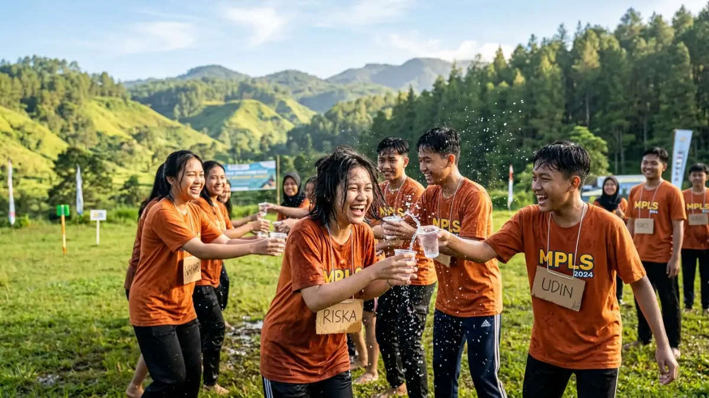

Paket outbound LDKS dan MPLS sekolah Batu Malang adalah program gabungan pelatihan kepemimpinan dan pengenalan lingkungan sekolah yang dikemas dalam aktivitas luar ruang di kawasan Batu. Program ini umumnya mencakup permainan tim, materi kepemimpinan, dan aktivitas fisik terarah.
DAFTAR ISI
- 1. Apa Itu Paket Outbound LDKS dan MPLS?
- 2. Mengapa Batu Malang Menjadi Lokasi Populer untuk Outbound Sekolah?
- 3. Apa Manfaat Outbound untuk Kegiatan LDKS dan MPLS?
- 4. Bagaimana Cara Kerja Paket Outbound LDKS dan MPLS?
- 5. Faktor Apa Saja yang Perlu Dipertimbangkan Sebelum Memilih Paket?
- 6. Apa Saja Kesalahan Umum dalam Merencanakan Outbound Sekolah?
- 7. Tips Memilih Paket Outbound LDKS dan MPLS yang Tepat
- 8. Kesimpulan Praktis
- FAQ
1. Apa Itu Paket Outbound LDKS dan MPLS?
Paket outbound LDKS dan MPLS adalah rangkaian kegiatan yang memadukan pelatihan kepemimpinan dasar dengan pengenalan lingkungan sekolah melalui pendekatan permainan dan simulasi di alam terbuka.
Program ini biasanya diselenggarakan oleh pihak sekolah bekerja sama dengan penyedia jasa outbound di kawasan Batu Malang.
Secara umum, kegiatan ini dirancang untuk siswa baru (dalam konteks MPLS) atau pengurus OSIS dan calon pemimpin siswa (dalam konteks LDKS).
Materinya mencakup kerja sama tim, komunikasi, pengambilan keputusan, dan pengenalan nilai-nilai sekolah, yang dikemas dalam bentuk permainan fisik dan simulasi kelompok.
Kawasan Batu Malang menjadi pilihan populer karena iklimnya yang sejuk, akses yang relatif mudah dari kota Malang, serta banyaknya fasilitas outdoor seperti area camping, flying fox, dan ruang aula untuk sesi indoor.
2. Mengapa Batu Malang Menjadi Lokasi Populer untuk Outbound Sekolah?
Batu Malang populer untuk outbound sekolah karena kombinasi udara sejuk, pemandangan alam, dan ketersediaan fasilitas pendukung kegiatan kelompok besar.
Beberapa faktor yang membuat kawasan ini diminati oleh sekolah-sekolah, di antaranya:
- Suhu udara yang sejuk sehingga mendukung aktivitas fisik sepanjang hari.
- Banyak tersedia venue dengan lahan luas untuk permainan kelompok dan formasi barisan.
- Akses transportasi yang relatif mudah dijangkau dari kota Malang dan sekitarnya.
- Tersedia paket penginapan sederhana hingga menengah yang dapat disesuaikan anggaran sekolah.
- Banyak penyedia jasa lokal yang sudah berpengalaman menangani kegiatan sekolah dalam skala besar.
Faktor-faktor ini membuat Batu Malang relevan sebagai destinasi kegiatan LDKS dan MPLS, terutama bagi sekolah yang berasal dari Malang Raya dan kota-kota sekitarnya.
3. Apa Manfaat Outbound untuk Kegiatan LDKS dan MPLS?
Manfaat utama outbound dalam LDKS dan MPLS adalah membangun kerja sama tim, melatih kepemimpinan, dan mempercepat adaptasi siswa baru terhadap lingkungan sekolah.
Beberapa manfaat yang umum dirasakan meliputi:
- Melatih kemampuan komunikasi dan koordinasi antar siswa dalam kelompok kecil maupun besar.
- Membentuk rasa percaya diri melalui tantangan fisik dan simulasi pengambilan keputusan.
- Mempererat hubungan sosial antar siswa baru sehingga proses adaptasi di lingkungan sekolah menjadi lebih cepat.
- Memberikan pengalaman belajar di luar kelas yang dapat meningkatkan motivasi siswa.
- Membantu guru dan panitia mengenali karakter kepemimpinan siswa sejak dini, khususnya dalam konteks LDKS.
Pendekatan berbasis pengalaman langsung ini dianggap lebih efektif dibandingkan metode ceramah semata, karena siswa terlibat aktif dalam setiap sesi kegiatan.

Siswa mengikuti sesi permainan kelompok dalam rangkaian kegiatan MPLS outbound di kawasan Batu Malang. (Ilustrasi)4. Bagaimana Cara Kerja Paket Outbound LDKS dan MPLS?
Paket outbound LDKS dan MPLS bekerja dengan menggabungkan sesi materi, permainan kelompok, dan evaluasi refleksi dalam satu rangkaian jadwal terstruktur.
Secara umum, alur pelaksanaan paket ini mencakup beberapa tahap berikut:
- Sesi pembukaan dan pengenalan tim fasilitator kepada peserta.
- Pembagian kelompok kecil untuk memudahkan koordinasi selama kegiatan berlangsung.
- Sesi permainan kerja sama tim seperti estafet, permainan strategi kelompok, dan tantangan fisik ringan hingga menengah.
- Sesi materi kepemimpinan atau pengenalan lingkungan sekolah yang disisipkan di antara sesi permainan.
- Sesi refleksi dan evaluasi di akhir hari untuk menegaskan nilai pembelajaran dari setiap aktivitas.
Durasi kegiatan dapat berlangsung dalam satu hari penuh atau menginap, tergantung kebutuhan sekolah dan anggaran yang tersedia.
5. Faktor Apa Saja yang Perlu Dipertimbangkan Sebelum Memilih Paket?
Faktor utama yang perlu dipertimbangkan meliputi keamanan lokasi, pengalaman fasilitator, kesesuaian materi dengan tujuan sekolah, dan transparansi biaya.
Beberapa hal yang sebaiknya dicermati oleh pihak sekolah antara lain:
- Rekam jejak dan pengalaman penyedia jasa dalam menangani kegiatan sekolah, bukan hanya kegiatan korporat.
- Standar keamanan peralatan outbound, terutama untuk aktivitas berisiko seperti flying fox atau permainan ketinggian.
- Kesesuaian materi kepemimpinan atau pengenalan sekolah dengan visi dan misi institusi.
- Kejelasan rincian biaya, termasuk konsumsi, transportasi, dan penginapan bila menginap.
- Fleksibilitas penyedia jasa dalam menyesuaikan jumlah peserta dan durasi kegiatan.
Kesalahan dalam mempertimbangkan faktor-faktor ini dapat berdampak pada kelancaran acara maupun keselamatan peserta.
6. Apa Saja Kesalahan Umum dalam Merencanakan Outbound Sekolah?
Kesalahan umum meliputi kurangnya pengecekan standar keamanan, minimnya koordinasi dengan pihak sekolah, dan pemilihan paket hanya berdasarkan harga termurah.
Beberapa kesalahan yang sering terjadi antara lain:
- Tidak mengecek langsung kondisi peralatan dan lokasi sebelum hari pelaksanaan.
- Mengabaikan kebutuhan khusus peserta, misalnya kondisi kesehatan atau keterbatasan fisik tertentu.
- Memilih penyedia jasa semata-mata karena harga murah tanpa mempertimbangkan pengalaman dan keamanan.
- Kurangnya komunikasi antara panitia sekolah dan tim fasilitator terkait tujuan pembelajaran kegiatan.
- Tidak menyiapkan rencana cadangan apabila cuaca tidak mendukung aktivitas luar ruang.
Perencanaan yang matang dan komunikasi dua arah dengan penyedia jasa dapat meminimalkan risiko-risiko tersebut.
7. Tips Memilih Paket Outbound LDKS dan MPLS yang Tepat
Tips utama dalam memilih paket adalah melakukan survei lokasi, meminta rincian program tertulis, dan memastikan standar keselamatan terpenuhi.
- Lakukan survei lokasi sebelum menetapkan pilihan akhir, terutama untuk kegiatan berskala besar.
- Minta rincian program dan jadwal kegiatan secara tertulis dari penyedia jasa.
- Tanyakan pengalaman penyedia jasa dalam menangani sekolah dengan jumlah siswa yang serupa.
- Pastikan tersedia tim medis atau P3K selama kegiatan berlangsung.
- Diskusikan tujuan pembelajaran spesifik agar materi LDKS atau MPLS dapat disesuaikan dengan kebutuhan sekolah.
8. Kesimpulan Praktis
Paket outbound LDKS dan MPLS sekolah Batu Malang dapat menjadi sarana efektif untuk membangun kepemimpinan siswa dan mempercepat adaptasi siswa baru, selama direncanakan dengan matang.
Prioritaskan keamanan, kesesuaian materi, dan transparansi biaya saat memilih penyelenggara. Sekolah disarankan melakukan survei langsung dan berdiskusi mendalam dengan penyedia jasa sebelum menetapkan pilihan akhir.